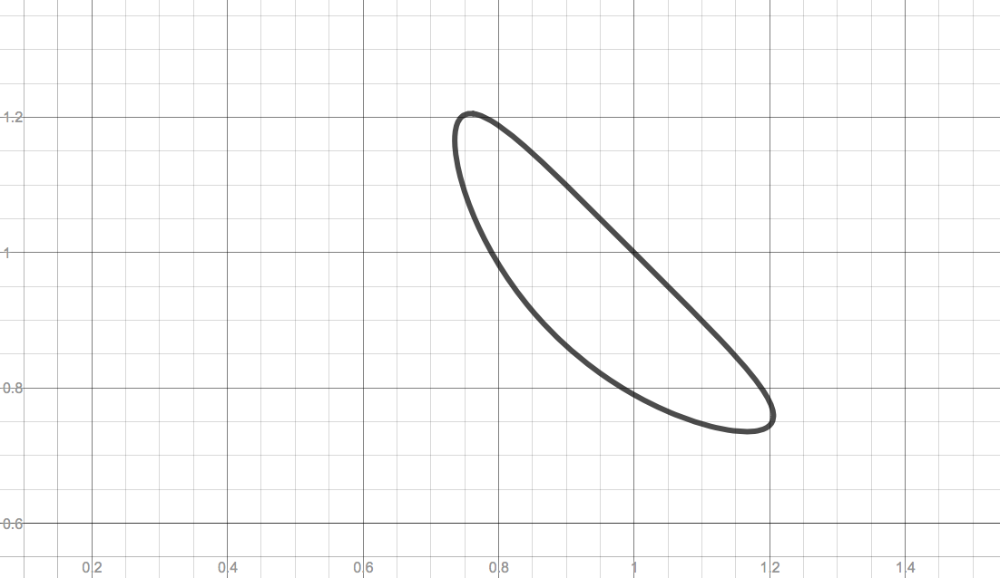
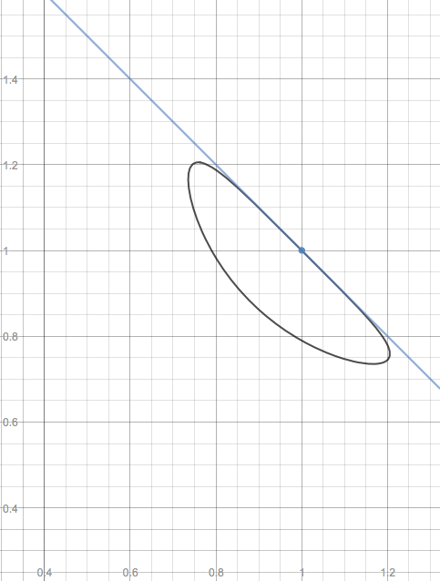

- (a)
- Use the implicit differentiation to find the derivative \(dy/dx\). Implicitly differentiate equation:\begin{align*} \ddx ( \cos (\pi x y) + x + y) = \ddx (1) &\implies -\sin (\pi x y)\cdot (\pi y + \pi x \dd [y]{x}) + 1 + \dd [y]{x} = 0 \end{align*}
Solve for \(\dd [y]{x}\):
\begin{align*} -\sin (\pi x y)\cdot (\pi y + \pi x \dd [y]{x}) + 1 + \dd [y]{x} = 0 &\implies -\pi y \sin (\pi x y) - \pi x \dd [y]{x} \sin (\pi x y) + 1 + \dd [y]{x} = 0 \\ &\implies \bigl (1 - \pi x \sin (\pi x y)\bigr )\dd [y]{x} = \pi y \sin (\pi x y) - 1 \\ &\implies \dd [y]{x} = \frac {\pi y \sin (\pi x y) - 1}{1 - \pi x \sin (\pi x y)} \hspace {2em} \mbox {if $1 - \pi x \sin (\pi x y) \ne 0$}\\ \end{align*} - (b)
- Consider the point \((1, 1)\). Show (algebraically) that this point lies on the curve.
- (c)
- Find the equation of the line tangent to the curve at \((1,1)\). Draw this line in the
figure above. Slope of tangent line:\begin{align*} \eval {\dd [y]{x}}_{(1,1)} &= \frac {\pi \cdot (1) \cdot \sin (\pi (1) \cdot 1) - 1}{1 - \pi \cdot (1) \cdot \sin (\pi (1) \cdot (1))} \\ &= \frac {\pi \sin (\pi ) - 1}{1 - \pi \sin (\pi )}\\ &= \frac {-1}{1} = -1 \end{align*}
Equation of tangent line:
\begin{align*} y - 1 = -1(x - 1) &\implies y = -x + 2 \end{align*}Graph of tangent line:
